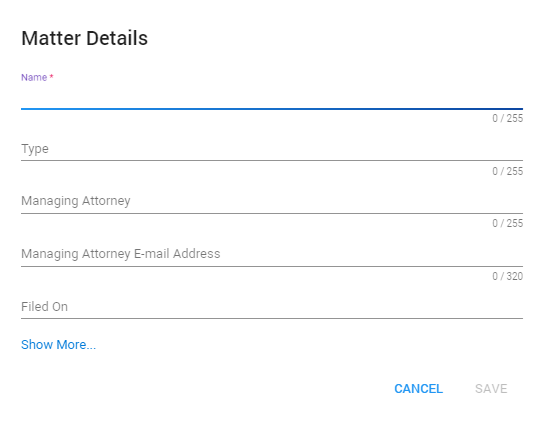

This topic addresses various tasks you can complete while working with matters.
View matters and filter/sort them via the columns.
|
|
Note: Filtering/sorting works the same on all pages. View a short animation of filtering and sorting on this page: Hold Management. |
To add/remove columns, select the Settings icon 
Then, select Columns and (de)select the appropriate columns.
Update the Matter Management View with the Refresh icon

Select
Define the Matter Details. Only the Name is mandatory. Click Show More... to define more details and set security to the Matter.

Click Save.
Edit a matter via the Edit Matter
icon 
Delete a single matter via the Delete Matter
icon 
Delete multiple matters by selecting them and clicking the Delete selected Matters icon 
Export the Matter View in a CSV, Excel or PDF file.
First, select the Settings icon
Then, select Export As... and select the format to which you want to export.
The Matter Management View might have been adjusted by filtering, sorting and/or by a specific selection of columns (via Settings > Columns).
To save this new view, select the Settings icon
Then, select Save View.
You can set security to the matters by adding users or groups to the matters. The security set on matter level will be inherited by the holds that are connected to the matter.
Global Hold Managers and Global Hold Viewers will always have access to all matters and holds.
When clicking on Show More, you will see options to either add Users or Groups to the Matter. You will only see these options if your subscription has Users with the role of Matter Manager or Matter Viewer.
The general role that is assigned to a User is also the role that will apply for the matter the User is assigned to.